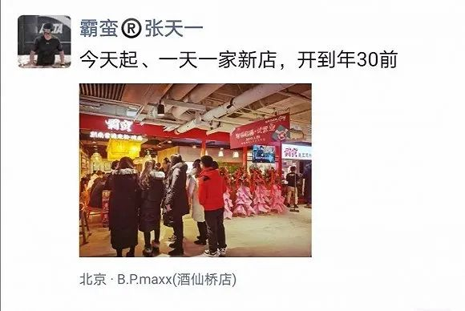

不惑创投李祝捷：短期红利改变不了一家企业的生死
原文链接 备份链接 燃财经（ID:rancaijing）原创 作者 | 闫丽娇 编辑 | 周昶帆 疫情之下，生鲜电商迎来了风口。订单激增、拉新显著、毛利润提升，时常处于补货状态。一部分长期亏损的生鲜企业，也借助此次契机，扭亏为盈。 生鲜电 …
“有人说时代的一粒沙落在个体头上是一座山。那疫情这座山砸到我们企业头上这一个月来，我感觉是扛了座珠穆朗玛。”这位业余爱好写作的霸蛮米粉创始人回顾企业刚刚度过的生死时刻如此感慨。
2014年大学毕业后，头顶“90后北大硕士”光环的张天一创立了霸蛮米粉这个餐饮品牌，主营线下。一晃5年过去了， 霸蛮米粉在全国有了60家线下直营门店，其中北京就有40家，基本涵盖了北京各个主要购物中心。
霸蛮米粉
信心满满的张天一在2019年末按下发展快进键，做出突击开十几家新店的决策。他在朋友圈写道：“今天起、一天一家新店，开到年30前。”

张天一朋友圈
孰料，一场突如其来的疫情“黑天鹅”，霸蛮米粉瞬间进入寒冷的冬季，线下60家门店收入基本为0，可以说是颗粒无收，一个月却要支出近2000万的成本费用。现金流是小微企业的生命线，以当时现金流情况计算，霸蛮米粉撑不到两个月。
但转机很快出现，张天一意外发现，此前没有重视的天猫品牌店渠道后台数据显示，半成品米粉销量增长显著。东边不亮西边亮，他果断集中人力发力线上。2月11日至2月28日，霸蛮米粉在天猫一共发出约8万个包裹，直接卖到断货。货是发出去了，但按照阿里电商平台的规则，需要消费者在收到货后点击“确认收货”，卖家才能拿到销售回款，时间差依然很长，现金流如同达摩克利斯之剑依然悬挂在霸蛮米粉的头上。
张天一本人
生死存亡间，张天一时刻密切关注各个平台的商家扶助措施。2月10日，阿里联合蚂蚁金服发布了《阿里巴巴告商家书》，旨在扶持商家，与中小企业一起“抗疫”，推出的六大政策，包括：减免平台商家经营费用；提供资金支持，为商家提供低息免息贷款；补贴快递员，让物流转得更快；提供灵活就业岗位，让员工有活干、有收入；为企业开放更多数字化服务能力；帮助企业远程办公和管理。
2月19日，阿里根据扶持商家的六大政策，出台了一共20多条的帮扶细则。其中，淘宝为商家提供免费的“提前收款”服务，商家只要发货后可以申请由网商银行垫付货款，做到“0帐期”。这解了霸蛮米粉的燃眉之急。通过天猫的0账期回款举措，霸蛮米粉累计提取660万元现金，成功度过鬼门关。
“我也比较过其他银行的贷款产品，但是由于授信周期长，再加上我们餐饮企业没有太多抵押物，授信额度也不大。”张天一向界面新闻记者表示，“感谢天猫的0账期回款，实实在在支持到了我们创业商家，是我们在疫情最困难的时期享受到的最有力度、及时性最好的一项金融支持政策。”
作为开放电商平台，阿里扶助商家的政策除了缓解现金流压力的雪中送炭外，还有授人以渔。张天一介绍称，天猫关注到我们这样餐饮企业的困难，主动和我们联系，探讨能否利用天猫和我们的门店完成更多电商化转型的动作。“在发现电商的需求后，霸蛮米线接着又用最快的速度去完成盒马这类商超渠道的补货。让我们的半成品速食米粉也能出现在货架上，居然也销售一空。”
思路打开后，张天一称将利用霸蛮米粉的线上运营能力帮到更多餐饮企业。据了解，霸蛮米线启动帮助餐饮企业代运营电商的业务，目前已有餐饮客户伙伴与其进入签约流程。
事实上，疫情期间，“0账期”拯救的不只霸蛮米粉一家小微企业，专注精油美妆的阿芙精油也是“0账期”的受益者。
据了解，春节后，阿芙精油在房租、员工工资、宣传推广上累计支出了2000多万元，但销售的自然回款很慢，一直属于净透支的状态。
“受快递停运和物流园区不能复工的影响，我们每天收到的回款仅仅不足销售的十分之一，企业现金流压力很大。”阿芙精油电商负责人杨寅向记者表示，公司使用了天猫的0账期扶持政策，获得500万的极速回款额度，这笔500万的急速回款给处于净透支的阿芙精油争取到1周左右的缓和时间，显著缓和了公司的现金压力。
同样面对资金压力的还有古琴匠人——王宁。为了推广古琴技艺，4年前的他毅然放弃华为基层干部身份和80万年薪，摇身一变成了斫琴师傅，在北京经营一家名为“律和琴社”的古琴社，目前在北京本地琴圈里有一定影响力。由于古琴对时间和手工要求比较高，加上面对稀有的原料，以及工坊多次搬迁（因棚户区改造等政策原因）造成的资金损失，还在创业和不断投入期的王宁只有利用网商贷做一些资金周转。
琴社
疫情来临后，带有半公益性质的琴社线下收入来源断绝，线上业务量上升，但线上销售以不赚钱甚至赔钱的散弦居多。很多琴友在疫情期间有充足的时间在家中弹琴，而琴弦属于易耗品，因此单根弦的订单比平日大概上扬了两至三倍。加上有一个仓库地点在村里，因而疫情无法使用，需要王宁额外重新备货。一时间，王宁资金压力陡增，纯靠自己的资金难免捉襟见肘。
“淘宝网提供的0账期，能够快速的回收部分已发货货款，确实能解燃眉之急，更快更多的备货来提高服务能力。”通信工程师出身的王宁表示，淘宝网商银行的操作非常简单，点几下手机几秒钟到账，他很清楚这离不开阿里人的艰辛努力和强大科技的支撑，并为阿里人“情怀温暖店主、科技服务小微”的精神点赞。
眼下，这场突如起来的新冠肺炎疫情仍在继续，复工延迟、营业受阻，中小微企业备受冲击。
资金就是战斗的粮草。此前，一份由清华、北大联合995家中小企业进行的调研问卷调查显示：如果疫情持续，85%的企业现金流最多维持3个月，如何保障现金流，成为企业生存的关键。70%的商家表示同时表示，只要资金链不断，就对生意回暖有信心。
3月2日，网商银行和淘宝联合发起倡议，呼吁全社会缩短中小企业账期，不截流不拖欠，保护他们的资金链；网商银行将垫资500-1000亿元，和淘宝一起，首先践行“0账期”。

阿里巴巴倡议
商家发货后可申请由网商银行垫资货款，方便扩大再生产，资金成本和风险由淘宝平台和网商银行承担。淘宝推出国内电商平台第一个免费“0账期”服务——发货就能秒收款，就为缓解中小企业的现金流压力提供了极大的支持。这是目前缓解现金流压力门槛最低的举措。
同时，支付宝也号召大家收货满意之后，第一时间主动确认收货，商家早一分钟收到钱。近期，淘宝上就新增了700万消费者确认收货，帮助商家提前回拢资金。
倡议称，符合条件的650万淘宝商家都可以在发货后，申请提前收款，消费者确认收货前，网商银行会替消费者垫付货款；消费者可以继续享受支付宝担保交易的安全体验，权益保障不受影响。在3月31日之前，这项服务都将免费提供。
值得一提的是，消费者们也在默默助力商家缩短回款时间。“我马上点收货”“坚持下去呀”成了消费者和商家之前最频繁的对话。
长江商学院副院长、金融学教授李海涛表示，中小微企业承担了中国大量的就业，疫情之后，流动性和现金流关系到他们的生存。账期缩短一天，回暖就更快一步。网商银行和淘宝的这个呼吁是非常有必要的，平台牺牲自己的短期利益，进行精准滴灌，带来的是千千万万中小微企业的稳定与发展。
原文链接 备份链接 燃财经（ID:rancaijing）原创 作者 | 闫丽娇 编辑 | 周昶帆 疫情之下，生鲜电商迎来了风口。订单激增、拉新显著、毛利润提升，时常处于补货状态。一部分长期亏损的生鲜企业，也借助此次契机，扭亏为盈。 生鲜电 …
原文链接 备份链接 图片来源：视觉中国 记者：林北辰 编辑：文姝琪 “ 即使在网上买到了口罩，你也不一定能够用上——延迟发货是最普遍的情况；发货了，订单还要面临虚假发货、商品是三无产品的风险。 ” “你能买到口罩吗？” 这是疫情中所有人最 …
原文链接 备份链接 随着新冠肺炎疫情在全球持续蔓延，目前除南极洲外六大洲均有确诊病例。截至北京时间3月2日19时，全球除中国外共65个国家和地区报告新冠肺炎累计确诊病例9000余例。 此前世界卫生组织总干事谭德塞2月28日宣布，将新冠肺炎 …
原文链接 备份链接 “疫情迟迟没有尽头，书店撑不住了。”2月24日，单向空间发布了一封续命救助信，称受新冠疫情影响，书店2月份收入较往年下滑80%，希望发起50元至8000元不等的众筹助力计划。这一举措引发了“做书”公号的批评，一篇题为《 …
原文链接 备份链接 这个春天，如何活下来，是悬在创业者头上的问题。 西贝的董事长贾国龙称，西贝的2万多员工处于待业中，即使贷款发工资，公司也只够撑3个月。 解散和辞退员工的事情已经发生，K歌之王宣布与全部200余名员工解除劳动合同，百程决 …